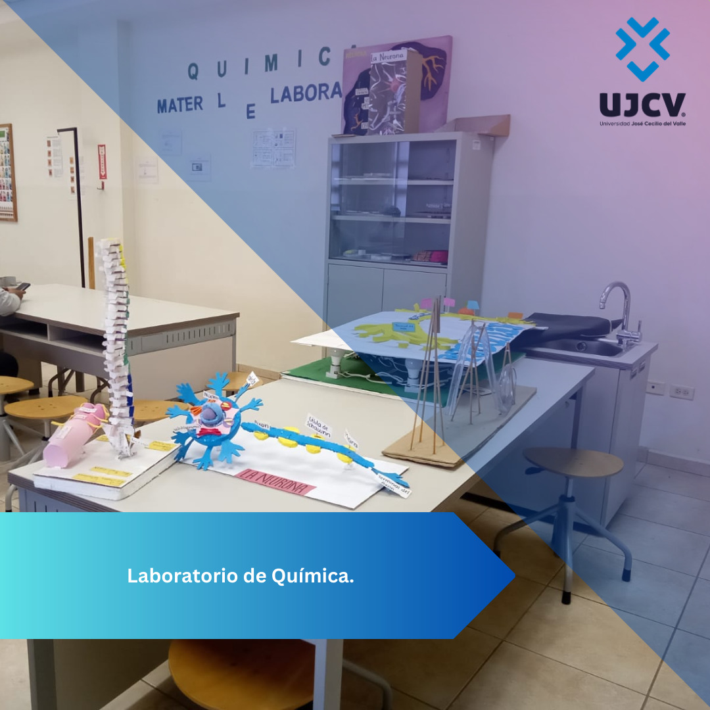
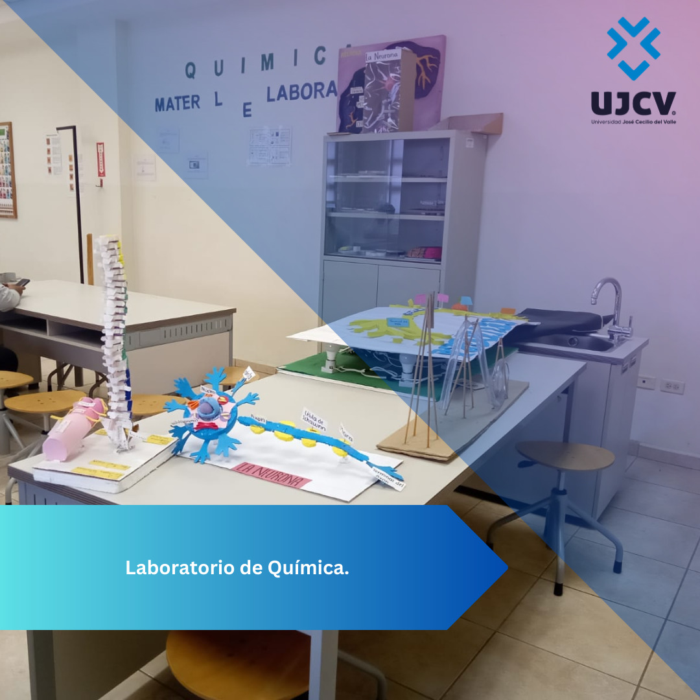

Un laboratorio es un espacio equipado con los medios necesarios para llevar a cabo experimentos, investigaciones, estudios y prácticas de carácter científico, técnico o tecnológico. Lo más importante de todo es que tiene que ser siempre seguro.